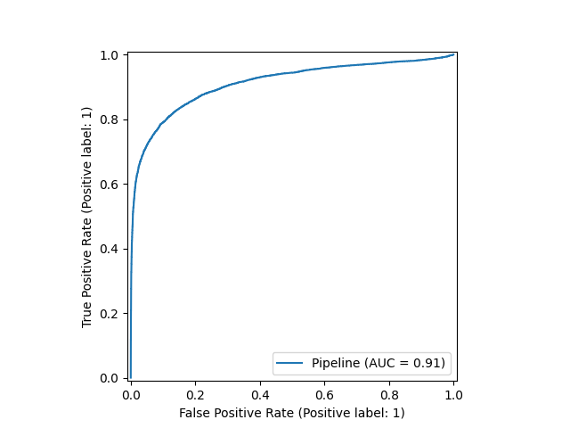
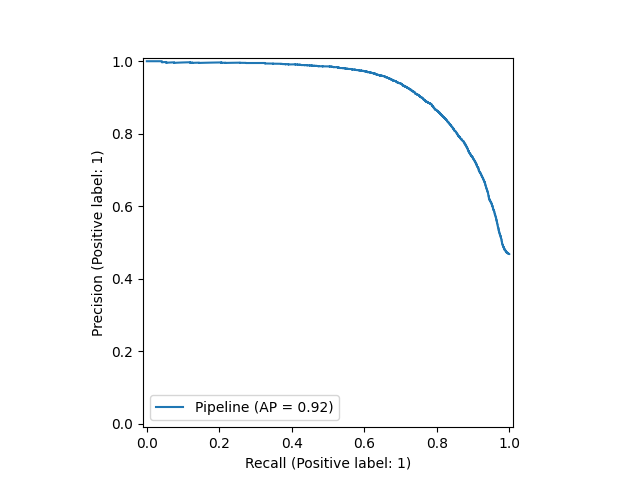
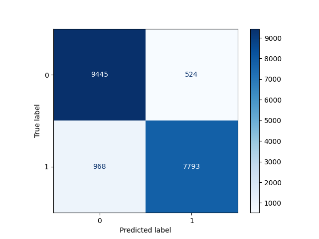
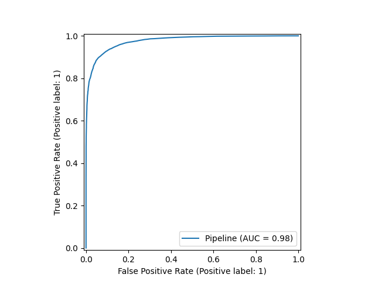
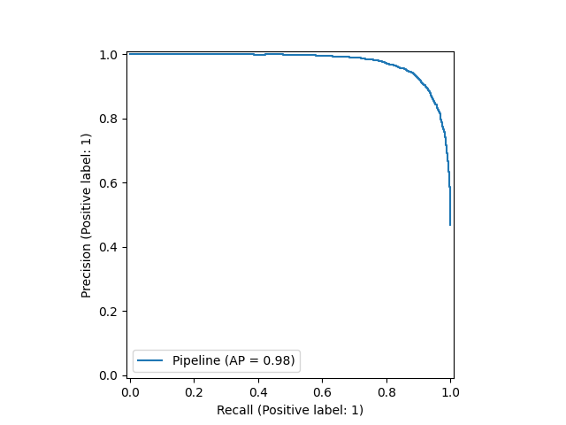

ID de Ejecución: 20251029_124409
Fecha de Reporte: 2025-10-29 12:52:27
| Métrica | Media | Std Dev |
|---|---|---|
| roc_auc | 0.9124 | 0.0006 |
ROC AUC (Test): 0.9113
Accuracy Balanceada: 0.8438


| Métrica | Media | Std Dev |
|---|---|---|
| roc_auc | 0.9759 | 0.001 |
ROC AUC (Test): 0.9761
Accuracy Balanceada: 0.9185


